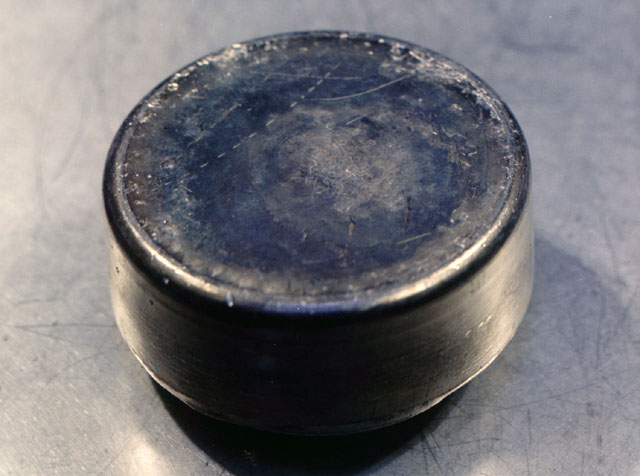

Плутоний
Плуто́ний (обозначается символом Pu; атомное число 94,Plutonium) — тяжёлый хрупкий высокотоксичный радиоактивный металл серебристо-белого цвета. В периодической таблице располагается в семействе актиноидов.
1934 год. Итальянский физик по имени Энрико Ферми, то так, то сяк раскладывал на кровати резиновые мячики, закупленные им по акции в магазине Детский Мир. Он пытался понять, как именно сгруппированы протоны и нейтроны, образующие ядра атомов.

Металлический плутоний используется в ядерном оружии и служит в качестве ядерного топлива. Оксиды плутония используются в качестве энергетического источника для космической техники и находят своё применение в ТВЭЛах. Плутоний используется в элементах питания космических аппаратов. Ядра плутония-239 способны к цепной ядерной реакции при воздействии на них нейтронов, поэтому этот изотоп можно использовать как источник атомной энергии (энергия, освобождающаяся при расщеплении 1 г 239Pu, эквивалентна теплоте, выделяющейся при сгорании 4000 кг угля). Более частое использование плутония-239 в ядерных бомбах обусловлено тем, что плутоний занимает меньший объём в сфере (где расположено ядро бомбы), следовательно, можно выиграть во взрывной силе бомбы за счёт этого свойства. Ядро плутония при ядерной реакции испускает в среднем около 2,895 нейтрона против 2,452 нейтрона у урана-235. Однако затраты на производство плутония примерно в шесть раз больше по сравнению с ураном-235.